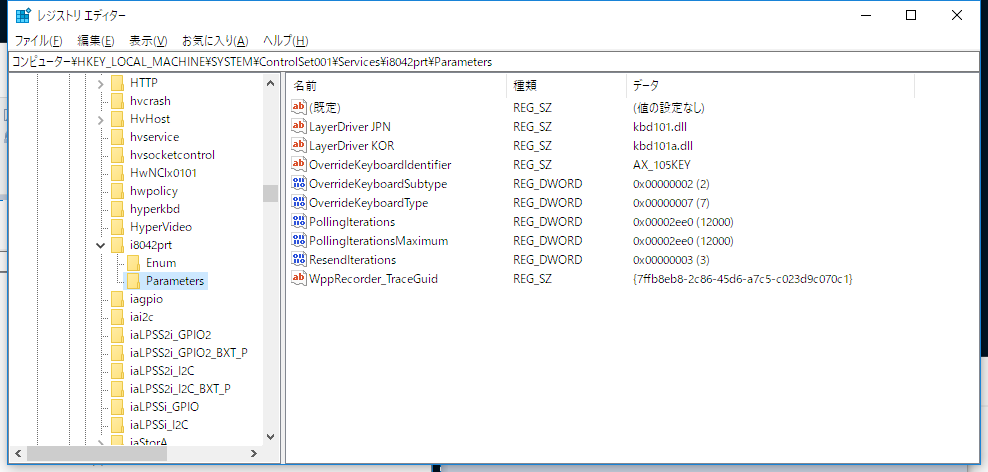

2018/2/11の記事では，Happy Hacking Keybordの設定を行いました．その時には，右Altキーを［全角／半角］キー，すなわち，全角と半角のトグルキーとして設定しました．今回は，以下の参照記事をもとに，右Altキーを全角，左Altキーを半角に設定します．
まずは，右Altキーを［全角／半角］キーした設定をもとに戻します．次の記事を参照しました．
［スタート］ボタンを右クリックして［ファイルを指定して実行］を選択し，「regedit」と入力して，レジストリエディタを起動します.
左ペインから，【HKEY_LOCAL_MACHINE\SYSTEM\ControlSet001\Services\i8042prt\Parameters】とたどりまます．
(注) 以下の手順はうまくいかない．
現在の設定を下記のように変更します．
| レジストリ値 | 変更前 | 変更後 |
|---|---|---|
| LayerDriver JPN | kbdax2.dll | kbd101.dll |
| OverrideKeyboardIdentifier | AX_105KEY | PCAT_101KEY |
| OverrideKeyboardSubtype | 2 | 0 |
レジストリエディタを閉じ，再起動します．
すると，もとのノートPCのキーボードもUS配列になってしまいした．
(注) 以下の手順が正しい．
そこで，LayerDriver JPNだけkbd101.dllとすることで，うまく動作しました．レジストリエディタの設定を残しておきます．

この時点で，PCのキーボードは日本語配列，HHKBは英語配列になっています．また，［全角／半角］キーの入力は[Alt]+[`]となっています．
あとは，WindowsのAlt空打ちで日本語入力(IME)を切り替えるツールを作ったの手順に従うだけです．